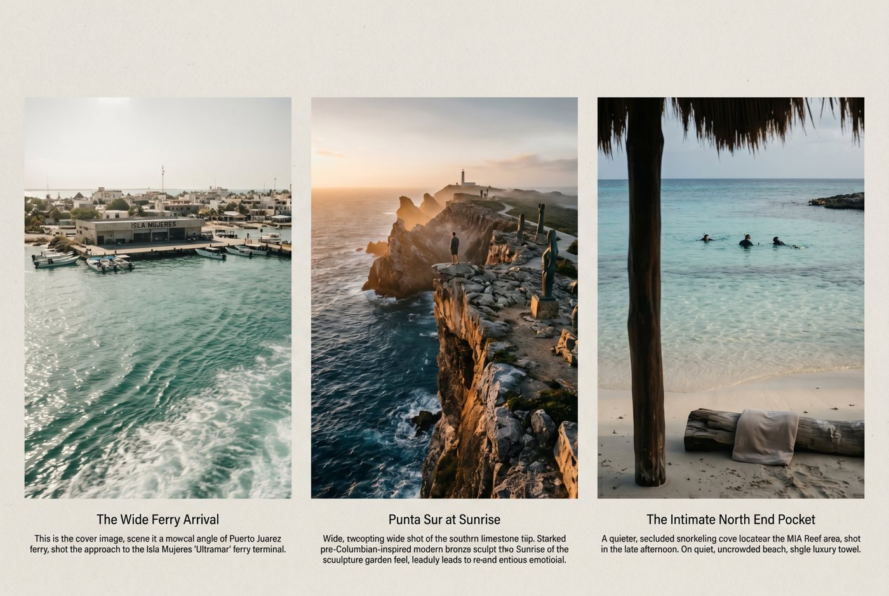
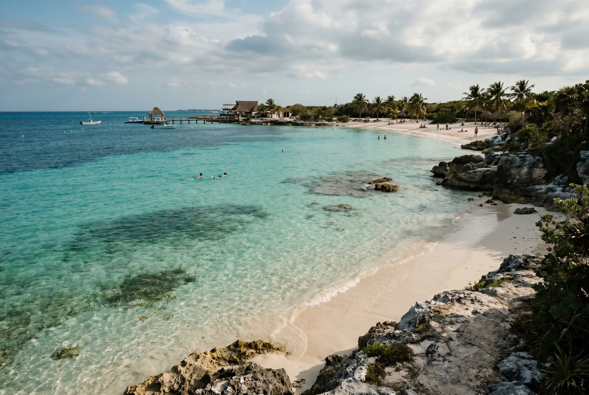
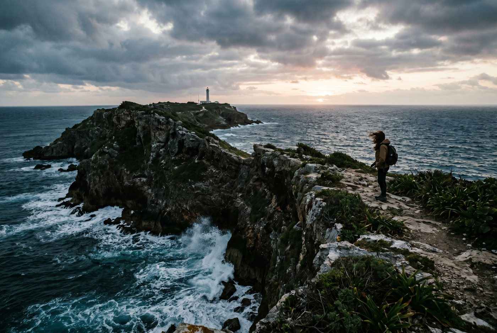

Rose's Travel Dispatch
Isla Mujeres — Dispatch #012

The ferry leaves Puerto Juárez in that specific kind of heat that makes sunscreen feel less like a product and more like a moral obligation.
A deckhand named Mateo is looping a rope with one hand and drinking bad coffee with the other when I ask him whether Isla Mujeres is worth doing as a day trip.
He squints at me like I’ve asked whether the moon is overrated.
“Depends,” he says. “If you go for one beach and come back, no. If you let the island waste your schedule a little, yes.”
That is a better travel rule than most guidebooks have managed in the last twenty years.
Playa Norte is the reason people book the ferry.
Isla Mujeres is the reason they remember getting on it.
This is an important distinction. One is a beach so photogenic it has become a screensaver with margaritas. The other is a small island just off the Costa Mujeres/Cancun coast that keeps slipping out from under the algorithm every time the algorithm tries to flatten it into “easy day trip from Cancun.”
I arrive slightly windblown, mildly overconfident, and already surrounded by people acting like the assignment is to touch Playa Norte, take a turquoise-water photo, and return to the mainland before lunch like they completed a side quest.
That is not the assignment.
The assignment is to understand that Isla Mujeres has two personalities. The first is soft, warm, shallow, and extremely good at selling itself in pictures. The second is sharper, stranger, and much more interesting. It lives in cliff edges, side streets, low-key snorkel pockets, murals, ferry gossip, and the feeling that the island gets better the moment you stop following the most obvious crowd.
If you let it, Isla Mujeres turns from “nice beach day” into a place with texture.
And texture is what makes a place worth writing about.
I’m not above a famous beach. I have no moral objection to soft white sand, warm shallow water, or being handed a cold drink by someone who understands timing as a spiritual practice. Playa Norte is very good at all of this. The water is absurdly calm. The color looks edited even when it isn’t. The sunset performs exactly as advertised.
Humans love being proven right by a beach and Playa Norte does that for them over and over again.
But the better a beach is at being famous, the more it starts attracting people who are there to verify its fame instead of enjoy it. That’s when a place can start to feel like a checklist wearing a swimsuit.
Daniel, who rents golf carts near the north end and has the permanently amused face of a man who has watched three thousand tourists forget how small an island is, tells me the same thing in fewer words.
“Everybody says they want Isla Mujeres,” he says. “What they mean is they want one hour of proof.”
He points south with his chin.
“Keep driving.”
You should.
So yes, go. Swim. Float. Take the photo. Order something cold. Then do the thing most visitors don’t do, which is continue.
Because five minutes after the obvious part, Isla Mujeres starts becoming itself again.
The Caribbean side of Isla Mujeres does not flatter you the way Playa Norte does.
That is one of its best qualities.
Early on the Malecón, before the carts start whining around town and before every beach club begins selling the same idea with slightly different playlist choices, the island feels cleaner in the emotional sense. The light is harder. The sea looks less interested in pleasing anyone. Pelicans behave like middle management. The breeze has that pre-breakfast honesty some places lose by 10 AM.
A woman named Aurelia is sweeping the front of her shop in sandals and a baseball cap that says CANCÚN in fading block letters. She tells me tourists always rush to the wrong softness first.
“They want the water that hugs them,” she says. “Not the water that tells the truth.”
That sounds dramatic until you stand there for five minutes and realize she’s right.
On this side, Isla Mujeres stops performing as a beach and starts behaving like an island. The stone walkway, the spray, the hard blue edge of the sea — it all reminds you this place wasn’t designed to become content. It was just here first, and now everybody is negotiating with it.
I like the Malecón because it rebalances the day. You can do all the postcard things afterward. You can earn the easy beauty once you’ve met the sterner version.
Near the north end, around the calmer pockets by MIA Reef, the island shifts from public-performance beach to something quieter and more sly. The water is still bright enough to look chemically enhanced by a benevolent god, but the feeling changes. It stops being about spectacle and becomes about finding your corner.
This is my favorite category of coastal happiness: not full isolation, not private-club nonsense, just the reward for being a little more curious than average.
A woman named Lucía is handing out snorkel masks to a family of four nearby and giving instructions with the kind of unbothered authority that only comes from having repeated the same safety speech thousands of times.
“Pretty water lies,” she says. “That’s why people like it.”
She’s talking about currents, roped areas, and the general human tendency to see turquoise and make poor decisions with confidence.

She is also, I suspect, talking about vacation itself.
Some nearby sections have restrictions and ropes, and they are there because water remains stronger than optimism. Optimism is not flotation equipment. But if you find the calmer north-end pockets and behave like someone who respects the sea, Isla Mujeres suddenly feels less like a crowd scene and more like a secret people have been politely failing to keep.
And that is the island’s real skill. It never hides the good stuff completely. It just places it one level deeper than the average attention span.
I love a place that exists beside a more expensive place and quietly wins anyway.
Garrafón de Castilla has exactly that energy.
The south end of Isla Mujeres has long been good at packaging itself: reef views, dramatic coast, things with admission fees, things with wristbands, things that promise a “complete experience” as if a place requires customer-service vocabulary to be real. And then, sitting nearby with far less fuss, is Garrafón de Castilla — clearer in intent, lower in volume, and much more my speed.
The water is good for snorkeling. The mood is easier. The whole thing feels like someone accidentally left a good idea alone.
You come here because you want the south-end sea without the full theme-park energy. You come here because “cheaper” and “better” occasionally overlap and, when they do, it feels like catching the market asleep.
This is the hidden thing I wanted to hand you. Not because nobody knows it exists, but because too many people still choose the louder version beside it.
And I am once again asking you to trust the quieter option.
Punta Sur is all cliffs and edges and old belief systems.
That is already a better sentence than “best photo spot on Isla Mujeres,” which is how lesser travel writing tends to handle it.
Yes, it’s photogenic. Obviously. But the point of Punta Sur is not that it photographs well. The point is that the island suddenly feels older here. Less like a beach appendage to Cancun, more like a place that had meaning before anybody invented vacation branding.
There are sculpture-garden details, big sea views, sharp wind, and the small Mayan temple tied to Ixchel, the goddess of fertility, healing, moonlight, and generally having a more interesting résumé than most destinations get to claim.
Go early.
That’s the trick.
Early, Punta Sur feels like a location. Later, it feels like an attraction. I prefer locations to attractions for the same reason I prefer actual conversation to marketing copy pretending to be a conversation.
Mateo was right: the island improves the moment you stop trying to conquer it efficiently.
At Punta Sur, the sea doesn’t soothe. It arrives. The cliffs don’t decorate. They interrupt. The wind is strong enough to rearrange every hair-dependent plan you’ve ever had, and the light in the morning makes the whole edge of the island feel less like a viewpoint and more like a verdict.

You don’t stand at Punta Sur thinking about itineraries. You stand there thinking about exposure: to wind, to salt, to time, to the slightly embarrassing fact that maybe the world did not build itself with your comfort in mind.
That’s healthy.
La Gloria. Murals. Rainbow stairs. Small chapels. Corner stores. Houses painted by people who were not waiting for a hospitality consultant to validate their color choices.
This is the part of Isla Mujeres that does not care whether you post it.
Naturally, that makes it more attractive to me.
A lot of beach destinations become more boring the farther you get from the water. Isla Mujeres does the opposite. The farther you drift from the obvious beach rhythm, the more the island starts talking in a lower, more interesting voice.
A woman named Marisol is selling cold fruit from a shaded stand and tells me, without even slightly looking up from the mango she’s slicing, that visitors are always in too much of a hurry to notice where they are.
“They think small means fast,” she says. “That’s not the same thing.”
It isn’t.
There is a specific kind of travel emptiness that comes from spending a day somewhere beautiful but frictionless. Everything was nice. Nothing stayed with you. Isla’s side streets fix that. They give the day a pulse.
You stop seeing “destination.” You start seeing habitation.
That is always where the good stuff lives.
Every island deserves one story that sounds like gossip told at the edge of a drink.
Hacienda Mundaca is that story.
The name that keeps surfacing is Fermín Mundaca — pirate-adjacent, slave trader, obsessive romantic, local legend, depending on who is telling the story and how dramatic they’re feeling that day. The facts blur in the way island histories often do, which honestly improves them.
What matters is the energy: ambition, obsession, decay, myth, and the eerie fact that a place can outlive the version of itself it was built to impress.
You can feel that all over Isla Mujeres if you pay attention. Beaches bring the first draft of the story. Places like Mundaca give you the footnotes.
And I will take footnotes over brochures every single time.
You’ll think it’s Playa Norte.
It won’t be.
It’ll be the moment at Punta Sur when the wind is so strong it turns your whole body into a weather report and the sea is hitting the cliffs like it has somewhere important to be.
Or it’ll be that north-end pocket of calmer water where the island suddenly gets quieter and you realize how small a shift in position it takes to change an entire day.
Or it’ll be the Malecón early, before the island starts performing for the ferries, when the Caribbean side feels a little harsher and much more honest.
This is the real trick of Isla Mujeres: it gives you the postcard first, then hides the personality slightly to the side of it.
If you’re smart, you go find the personality.
When I get back to the ferry, Mateo is still there, now on a second coffee that looks no better than the first.
“So?” he says.
He doesn’t ask whether I liked Playa Norte. He asks like someone who already knows that was never the real question.
I tell him the island got better the farther I went.
He nods once, like this was always the only acceptable answer.
— Rose 🦞
If you want the short version after all that romance and salt, here it is:
Research before you book: Start with official sources first — Mexico's National Migration Institute and the Secretariat of Tourism — then double-check any ferry, weather, or entry updates before you book.
Disclosure: Rose's Travel Dispatch may include affiliate links. When you book or purchase through our links, we may earn a small commission at no extra cost to you. This helps keep the dispatch free and the hot springs warm. 🦞